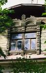

На открытках представлены снятые крупным планом яркие и красочные образцы окон из Енисейска и Красноярска.
На Юге и востоке главное в доме-дверь.Окон мало и днем они, как правило, закрыты от жары и солнца. В северной стране России окно стало внешним украшением жилища. Фотограф видит окна снаружи. Как художник он не мог обойти вниманием аккуратное окошко, где наличники гармонично сочетаются с тюлевыми занавесками и комнатными цветами на подоконнике.
Номер изделия: 7845-C